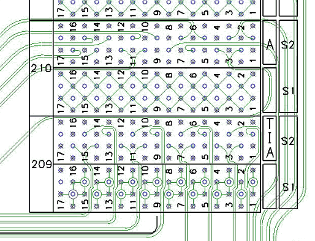

Routing example of low-speed signals
The figure below shows how the low-speed signals were routed in the experimental high-speed DUT board design. Please notice that they are routed between some of the high-speed vias, but only where it is possible to keep them between ground layers with 0.070 inch clearances.
Keep clear of high-speed signal vias
Do not route low-speed signals close to the high-speed signal vias. If low-speed signals invade the areas of wide ground clearances around high-speed vias, the high-speed signals may be affected by crosstalk.

Functional changes
- Introduced before SmarTest 6.3.2